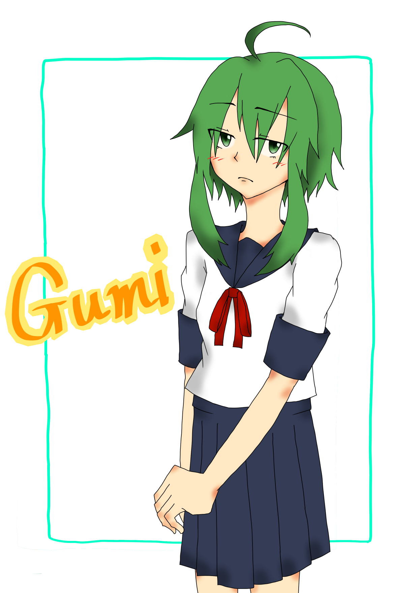

illustration
2014年からイラストの制作をはじめました。主に好きな作品の二次創作をメインで行っています。
ここでは、2014年~2020年の間に制作したイラストを紹介します。
|

|
GUMI - vocaloid
ペンタブを買って3枚目ぐらいに描いた絵だと思います。
影の描き方がわからなく、ぼかしで誤魔化しながら描いているのがわかります。
今では、恥ずかしくて正直見ていられないです。
今のイラストと比べると成長したのが目に見えてわかるので、載せることにしました。
気を抜くと首が長くなってしまう癖があるのですが、このころから変わっていないようですね。
vocaloidが好きで、今でもたまに聞いています。
制作日時：2014年10月17日
|
|
|
未来祭 - オリジナル
私が所属している大学の大学祭をイメージしたオリジナルキャラクター（もちろん非公式）です。
アホ毛が第何回かを表していて、スカーフを止めているのは大学のロゴをモチーフにしたものです。
大学祭にてサークルで配布していた部誌に載せたイラストになります。
あまりオリジナルキャラクターを描くことが少ないので、楽しかったです。
バストアップということで、描くものが少ない分、目や唇に力を入れて描いています。
特に唇は、ここまでしっかり描けてかわいいものは今までなかったので、今後も試してみたいですね。
制作日時：2019年9月27日
|
|
|
前川みく - THE IDOLM@STER シンデレラガールズ
担当アイドルです。2020年の前川みくの誕生日をお祝いするために描いたイラストです。
2020年のお正月に実装されたSSRの衣装を描きました。
袖やスカートの裾にたくさんの模様があり、すべて手で描いたのでとても大変でした。
2018年から誕生日イラストを描くようになったので、3年目になります。
定期的に手の込んだイラストを描くことになるので、とても楽しいです。
このイラストは、顔や髪の毛、リボンなどの装飾は上手く描けたので気に入っています。
手やスカートのフリルなどは、まだまだなので頑張りたいですね。
制作日時：2020年2月22日
|